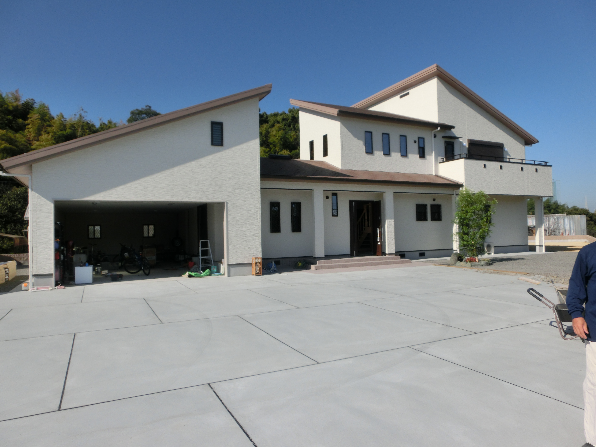
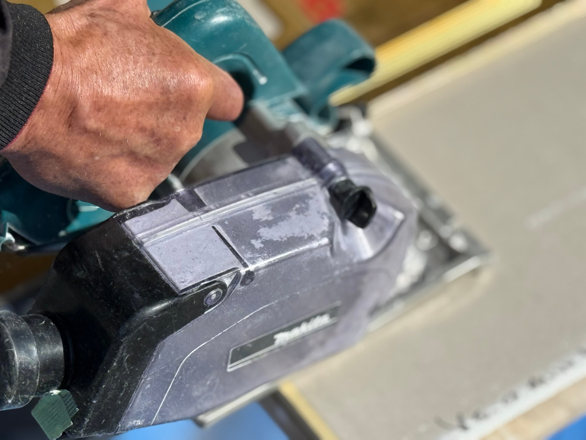
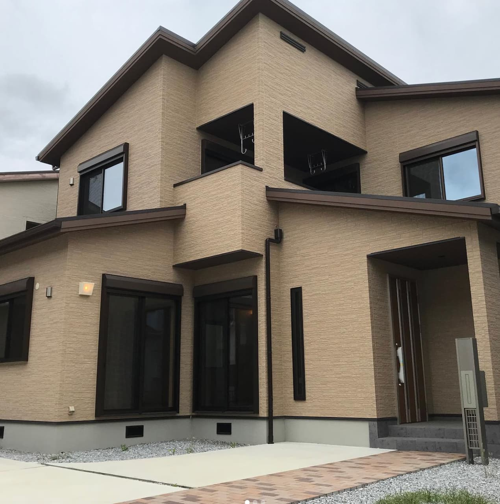
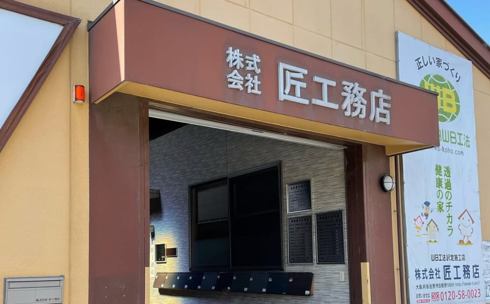

定制住宅
面向大阪与关西的新建定制住宅，围绕家庭生活、气候舒适、工艺细节与长期维护进行规划。
面向海外客户的网站，应当让访客在阅读细节之前就感受到改变的价值。
这些视觉让公司形象更高级、更容易记住，同时保持信息直接：设计、翻新、施工、估算和联系。
新版网站保留原有核心理念：像建造自己的家一样。同时用更清晰、更国际化的视觉语言呈现。

不再依赖传统工务店的旧式观感，而是以墨色、发光格子、自然材料照片和克制的朱红点缀，营造先进但有日本温度的形象。
面向正在寻找大阪定制住宅公司的海外业主，匠工务店可在关西支持定制住宅、翻新改造、店铺与办公室施工。
面向大阪与关西的新建定制住宅，围绕家庭生活、气候舒适、工艺细节与长期维护进行规划。
日本既有住宅翻新，改善室内空间、隔热舒适、收纳和日常生活动线。
关西店铺与办公室施工，同样重视动线、材料完成度与施工管理。



先告诉我们地点、时间、用途与语言需求，我们会从这里开始整理沟通。